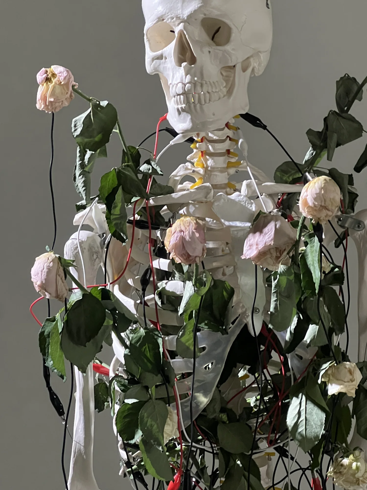

Research / Practice-based
Affect, touch
and time.
An ongoing inquiry through Meta Rose into conflicting feelings, material change and the conditions of participation.

Meta Rose / Ongoing inquiry
Contradiction as a condition of feeling.
Minnie Park’s research develops through making, exhibiting and revisiting the works of Meta Rose. Each installation tests a different relationship between living materials, an audio-visual system and the people who activate it. The recurring question is how an artwork can make conflicting feelings available to sensory experience without requiring them to resolve into a single emotion.
The rose gives this inquiry a material form. Petals and thorns hold attraction and the possibility of pain in the same object; a flower can retain its colour as it begins to wilt. Park approaches ambivalence through this simultaneity. Pink, grey and black are paired with contrasting sonic textures to work with vitality, friction and loss—not as universal codes for how a viewer should feel.
The Meta Rose body of work →
Touch / Participation
The encounter is part of the work.
Touch connects a participant’s body to changes in sound, colour and moving image. The choice of a rose, the duration of contact and the presence of other people affect how a composition unfolds. The exhibition is therefore a research setting in which audience, material, space and artist all contribute to what can be experienced.
The Meta Kibun Project examined personal reflection through touch, colour and Korean emotive language. Shared Resonance extends this inquiry into interdependence: two or more participants must connect to activate the work. These different arrangements ask how agency and emotional attention change between an individual encounter and a shared one.
Beauty → Wonder → Affect describes an intention for the encounter: visual attraction invites attention, a responsive material invites investigation, and participation can open a space for emotional reflection. This sequence guides the design while leaving each participant’s response open.
Shared Resonance →Time / Material memory
The rose continues to change after the encounter.
Living roses introduce a duration that differs from the repeatable time of a digital system. Over an exhibition, many people touch the flowers while petals lose moisture, leaves curl and stems dry. Contact and natural change take place together. In Park’s practice, the flower’s remaining vitality and its deterioration make life and death perceptible as overlapping conditions rather than a simple before and after.
After each exhibition, Park keeps and dries the roses, photographing their changing condition. The photograph cannot restore the living flower or repeat the encounter. It retains a visible record of a material state that can no longer be returned to, bringing the flower’s absence into relation with its continuing image.
Read across successive exhibitions and years, these photographs offer another way to study Meta Rose: through the materials that remain after participation has ended. This developing photographic inquiry asks what an image can retain of touch, duration and loss, and what remains outside its frame.

Data / Open questions
What can a record of interaction tell us about feeling?
The Funeral brings emotional naming, intervention, witness and record into a four-part installation. It extends the inquiry towards the relationship between a participant’s account of feeling and the digital traces of participation. A touch event or a duration records an action; interpreting its emotional significance requires the participant’s account and the circumstances of the encounter.
A longer-term question is whether relationships between touch, duration, colour and self-described feeling can be expressed mathematically without erasing the context that gives them meaning. Park approaches this as an artistic research question still in development, alongside the material and photographic records of the roses.
Meta Rose: The Funeral →Research foundation / 2025
The Meta Kibun Project
The 2025 study examined how tactile interactivity and Korean emotive colour terms shaped audiences’ affective experience. Drawing on kibun (기분)—mood, feeling and atmosphere—it invited participants to compose a colour term using a Korean emotive suffix or an expression in a language of their choice. The exhibition compared a non-interactive video with a tactile installation using the same audio-visual material.
Fifteen semi-structured interviews and sixteen survey responses were collected over 12–13 September 2025. Participants frequently described tactile participation as more personally engaging than watching the video. Colour choice and emotive language supported reflection on feelings that were mixed, changing or difficult to articulate. These accounts provide evidence within this exhibition, rather than a universal correspondence between colour and emotion or a prediction of every audience’s response.
The Meta Kibun Project: Exploring Interactivity, Audience, and Affective Experience in Digital Interactive Art Exhibitions
Minnie Park / Bachelor of Media and Communication (Honours) / 2025